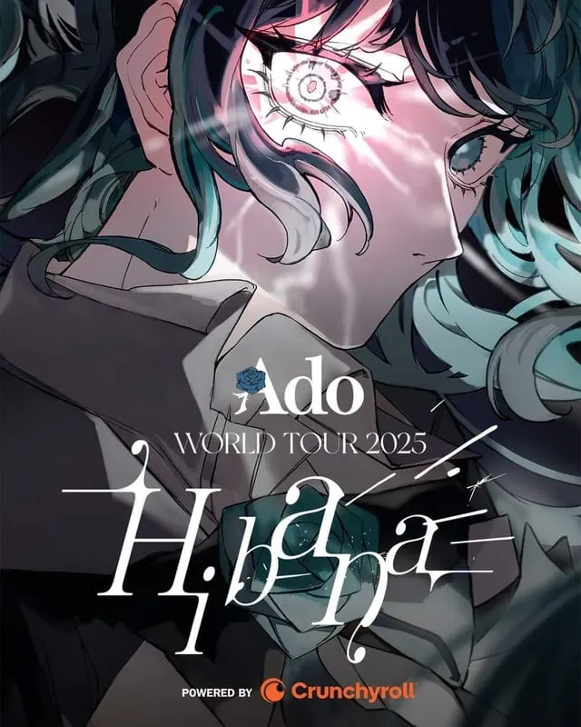
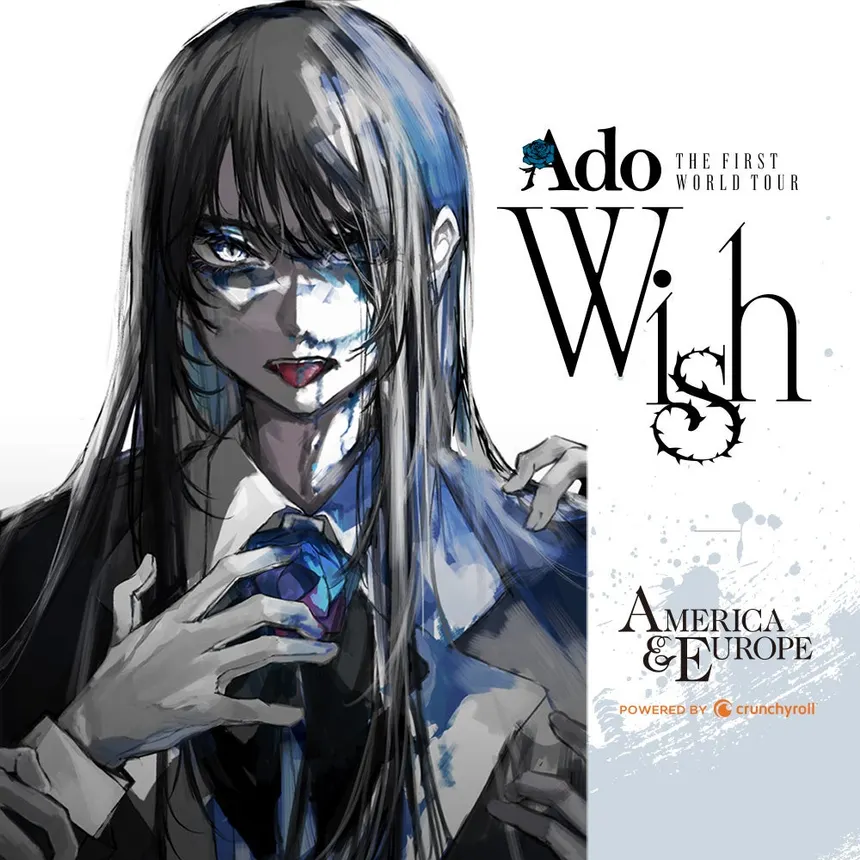
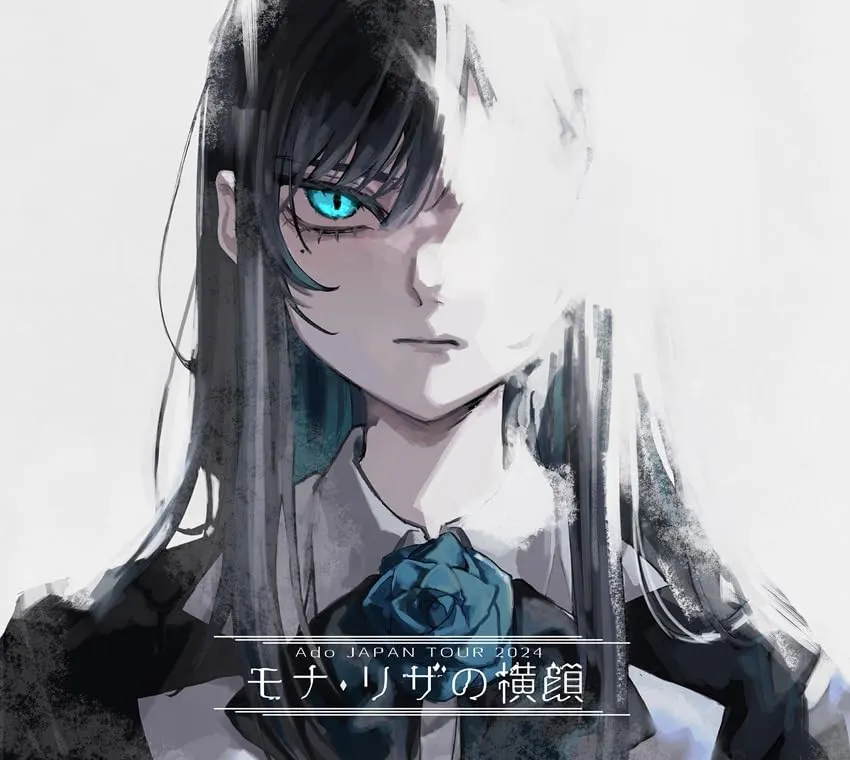

Hibana
Aquesta va ser la seva segona gira mundial, patrocinada per Crunchyroll, inclou més de
30
ciutats arreu del món, amb una parada destacada a Barcelona el 29 de juny de 2025 al
Palau
Sant Jordi. Va començar el 26 d'abril de 2025 a Saitama, Japó i va acabar el 24 d'agost
de
2025 a Honolulu.

Wish
Va ser la primera gira mundial d’Ado, que va començar el 29 de març de 2024 a Los
Angeles i
va recórrer ciutats com Londres, París, Nova York i Tòquio. La gira va tenir un gran
èxit,
amb totes les entrades esgotades i una recepció entusiasta del públic.

Profile of Mona Lisa
Va ser una gira nacional al Japó d’Ado que va tenir lloc durant el 2024, després del seu
exitós concert al National Stadium i abans del llançament de la seva gira mundial
Hibana.
Aquesta gira va servir com a pont entre el seu àlbum Kyougen i el següent, Zanmu.